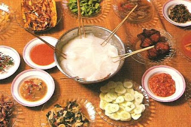
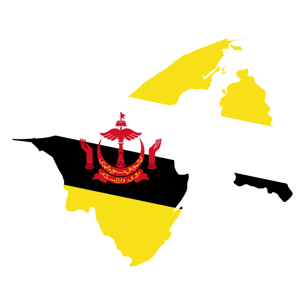
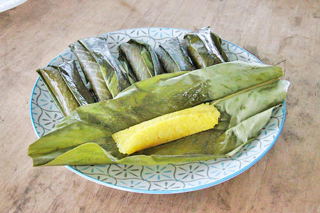

Ambuyat
Ambuyat is a traditional dish made from sago, usually eaten with a V-shaped bamboo chopsticks called candas and dipped into a sour sauce.

Come And Experience Why Brunei Is Called The "Abode of Peace".
Here Brunei offers wild variety of delicious traditionak foods that was carried down from generations to generations.

Ambuyat is a traditional dish made from sago, usually eaten with a V-shaped bamboo chopsticks called candas and dipped into a sour sauce.

This is a Bruneian fast food usually composed of steamed rice, ayam goreng(Fried Chicken) and a sambal sauce. It often be wrapped in a brown paper.

A Bruneian and other Malay communities such as Sabah trditional treats. A ring-like, flower-shape made from primarly rice flour, wheat flour and sugar.

Chewy green ball rolled in grated coconut with melted palm sugar inside the ball.

Traditional snacks made from cooked glutinous rice with coconut milk with the add of flavor from pandan leaves and wraupped in daun nyirik leaves.